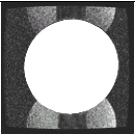

Proprietary to General Electric
Direction 5670000, Rev# 1
Optima MR450w 1.5T Service Methods
Module Version 5.0, Version Date 12/11/09
Proprietary to General Electric |
EPT is typically run without the TLT Head Loader (that is the only way the standard foam holder for the 10 cm NiCl sphere will fit in the head coil). To get a better assessment of clinical EPI image quality, use patient comfort pads, towels etc. to center the 10 cm NiCl sphere (46-317586G1) in the TLT Head Loader (46-287899G1), put the sphere and the loader in the head coil and run the Head B-zero Image test as described in the Echo Planar Test (EPT) procedure.
The following section contains examples of different types of ghosting typically seen in EPI images. Compare the images from the customer to the images below and execute the checks (EPI Ghosting Checks) listed for the ghosting type most closely resembling your case. If the customer’s images contain several types of ghosting, start with the most dominant type.
| NOTE: | Running SCT (Short Cross Term calibration) as described in EPT calibration procedure may help reduce ghosting. |
Table 1: Different Types of EPI Ghosts
| 3.1 “Edge” ghosting – normally seen with ramp-sampled
EPI prescriptions Check (EPI Ghosting Checks): 6, 8, 10 |  Figure 3.1 |
| 3.2 B0, “Constant” or “Flat Field”
EPI ghosting – is caused by a constant phase error between even &
odd EPI echoes. The ghost intensity is approximately uniform Check (EPI Ghosting Checks): 1, 2, 3, 4.2, 5, 9, 10, 11 |  Figure 3.2 |
| 3.3 “Linear” EPI ghosting – similar to a B0
ghosting in appearance with the addition of a vertical signal void.
Linear EPI ghosting is caused by a residual delay between even &
odd echoes. Increased linear ghosting normally indicates a gradient
problem. Check (EPI Ghosting Checks): 3, 4.1, 4.2, 6, 7, 8, 9 |  Figure 3.3 |
| 3.4 “Tilted Linear” EPI Ghosting - linear EPI ghosting
with a visible tilt in the signal void that indicates an uncompensated
cross-term eddy current generated by the readout gradient that maps
to the phase encode gradient. Check (EPI Ghosting Checks): 3, 8 |  Figure 3.4 |